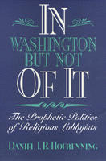

Strategies of religious lobbyists and their manueverings in American politics
Strategies of religious lobbyists and their manueverings in American politics


 Strategies of religious lobbyists and their manueverings in American politics
Strategies of religious lobbyists and their manueverings in American politics

|  |
In Washington but Not of ItThe Prophetic Politics of Religious LobbyistsDaniel J. B. Hofrenningpaper EAN: 978-1-56639-304-1 (ISBN: 1-56639-304-3) |
"This book is theoretically fresh, ha[s] good narrative reason and reasoning. . .a fine book."
—Martin E. Marty, University of Chicago
Ninety percent of Americans tell pollsters they believe in God; 68 percent say they are members of a religious organization. Most of these organizations are represented by lobbyists in Washington, D.C . Daniel J.B. Hofrenning examines the role of these religious lobbyists in American politics and argues that, no matter what their ideological stance, all share an anti-elitist strategy in their campaigns against Washington's policies.
Hofrenning considers the scope of religious organizations, their tactics, their international politics, and their relationships among leaders and members. Through extensive interviews with religious lobbyists, he examines both conservative and liberal lobbyists and their distinct methods of wielding power. In comparison to their secular counterparts, who seek small, targeted changes, religious lobbyists attempt fundamental change on a wide range of public policies, based on a philosophy that something is profoundly wring with society and government priorities.
This book not only provides insight into the activities and goals of religious lobbyists but also adds to our understanding of politics at the margins—a politics that is increasingly affecting the mainstream political agenda.
"This book is a solid contribution to our understanding of religious lobbies. It makes a strong case that they help shape the political agenda, with generally positive consequences for democratic traditions and values. It should be read by anyone interested in the nexus of religious lobbies and Washington politics."
—Matthew C. Moen, University of Maine
Acknowledgments
1. Religious Lobbyists as Prophets
2. Prophetic Religious Lobbying and the History of Church-State Relations
3. Theoretical Perspectives
4. The Scope of the Prophetic Lobby
5. The Prophetic Outlook of Religious Lobbyists
6. The Tactics of Prophetic Lobbying
7. Prophetic Leaders and Their Members
8. Prophetic Lobbyists and the Future of American Politics
Appendix: Methodology and Sample
Notes
Index
Daniel J. B. Hofrenning is Assistant Professor of Political Science at St. Olaf College.
Political Science and Public Policy
Religion
© 2015 Temple University. All Rights Reserved. This page: http://www.temple.edu/tempress/titles/1037_reg.html.